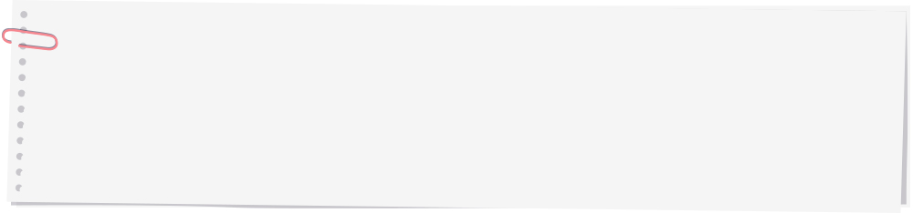

와 제 롤모델이 잡스에요!!! 아이폰 첫 출시되고 나서부터 계속 아이폰 쓰고 있는데 잡스가 너무 그리워요ㅠㅠ 지금은 돈만 벌려고 하는 것 같아서 디자인 발전도 없고ㅠㅠ와 제 롤모델이 잡스에요!!! 아이폰 첫 출시되고 나서부터 계속 아이폰 쓰고 있는데 잡스가 너무 그리워요ㅠㅠ 지금은 돈만 벌려고 하는 것 같아서 디자인 발전도 없고ㅠㅠ와 제 롤모델이 잡스에요!!! 아이폰 첫 출시되고 나서부터 계속 아이폰 쓰고 있는데 잡스가 너무 그리워요ㅠㅠ 지금은 돈만 벌려고 하는 것 같아서 디자인 발전도 없고ㅠㅠ와 제 롤모델이 잡스에요!!! 아이폰 첫 출시되고 나서부터 계속 아이폰 쓰고 있는데 잡스가 너무 그리워요ㅠㅠ 지금은 돈만 벌려고 하는 것 같아서 디자인 발전도 없고ㅠㅠ와 제 롤모델이 잡스에요!!! 아이폰 첫 출시되고 나서부터 계속 아이폰 쓰고 있는데 잡스가 너무 그리워요ㅠㅠ 지금은 돈만 벌려고 하는 것 같아서 디자인 발전도 없고ㅠㅠ
해운 이야기
식탁 위 참치,
어떤 사연을 품고 있을까
어떤 사연을 품고 있을까
그동안 몰랐던 화물 이야기
통조림부터 회까지 다양하게 즐길 수 있는 참치는 어떤 과정을 거쳐 우리의 식탁에 오르게 됐을까?
사실 1970년대 전까지만 해도 일본을 제외한 지역에서 참치의 수요는 극히 드물었다.
참치의 부상은 컨테이너와 같은 운송 혁명과 급속냉동이 가능한 저온 냉동기술의 발달로
글로벌 유통의 길이 열리게 되었다. 세계인들의 입맛을 돋우며 물류시장의 성장을 주도하고 있는
참치의 흥미로운 이야기를 소개한다.
글
편집실
참치도 버려지던 시대가 있었다?
고급 참치가 쓰레기장에 버려지던 시대가 있었다니 믿어지는가? 사실 1970년대 전까지만 해도 일본을 제외한 지역에서 참치는 낚시꾼들에게 사랑받지 못한 애물단지 신세였다. 쓰레기장에 버려지거나 고양이 사료로 쓰이기 일쑤였던 참치는 1960년대에 접어들면서 일본인들에게 사랑받기 시작했다. 기름진 참치의 특성 때문에 1950년대까지만 해도 일본인들에게 외면받던 참치가 경제 발전이 시작되면서 기름진 생선 참치를 찾는 수요가 급증하기 시작한 것이다. 하지만 물류와 냉동 기술의 한계 때문에 참치는 특정 계층만이 즐길 수 있는 고급 음식으로 취급될 수밖에 없었다.
항공운송에서 해상운송의 변화가 이끈 대중화
참치를 북미지역에서 일본으로 항공운송을 시작한 초기에는 우여곡절이 많았다. 당시 영하 50℃까지 급송냉동시키는 저온기술은 있었으나 큰 참치의 몸속까지 냉동시키는 부분에 한계가 있었으며, 내장 등의 손질을 통한 포장운송 기술 역시 부족했다. 몇번의 시행착오를 거치면서 마침내 대서양산 참치가 일본 수산물 시장에서 판매되기 시작했다.
이후 2000년대에 들어 참치의 수요가 점차 확대되면서 참치의 물류·유통 관계자들은 고가의 참치를 저렴하게 운송하기 위해 항공운송 대신 해상운송을 택했다. 이로써 참치 물류는 큰 변화를 맞게 되었다. 세계인들이 컨테이너의 보편화와 냉동·냉장컨테이너의 발전으로 고가의 참치를 보다 저렴하고 안전하게 먹을 수 있게 된 것이다. 또 해상운송을 통해 참치는 일본뿐 아니라 유럽, 미국 등지에서 더욱더 사랑받게 되었다.
울트라 프리저의 지대한 역할
참치의 물류 변화와 대중화를 이끈 주역은 바로 울트라 프리저(Ultra Freezer)라고 불리는 초저온냉동컨테이너이다. 울트라 프리저를 통해 장시간의 해상운송에도 참치의 질을 그대로 유지해 줄 수 있게 된 것이다. 울트라 프리저는 영하 60℃의 초저온으로 설정이 가능하여 선박이 참치(혹은 극저온 운송이 필요한 화물들)를 전 세계로 보내는데 지대한 역할을 하고 있다. 이 서비스는 이동, 선적 및 양하 과정에서 초저온 상태를 유지하기 위한 높은 수준의 기술력과 고도의 숙련된 인력이 필요하다. 이런 이유로 일반 냉동·냉장 컨테이너 대비 운임이 8~10배까지 높아 고부가가치 사업으로 인정받고 있다.
또 울트라 프리저는 평균적으로 컨테이너 한 대당 약 50~60만 불의 내품 가치가 있으며, 일반 냉동 컨테이너는 한 대당 1~2만 불의 내품 가치를 지니고 있어 약 30~40배 수준의 고부가가치 화물을 운송한다고 볼 수 있다.
올 초 울트라 프리저 시장에 성공적 진입해 영향력 확대
이러한 울트라 프리저 시장은 비즈니스 특성상 신규시장 진입 및 물량 확보가 어렵기 때문에 최근까지 머스크, CMA, Coldwave 등 일부 선사 및 업체의 독과점 형태로 운영되어왔다. 이에 현대상선은 울트라 프리저 기기를 확보하는 등 신규시장 개척을 위해 다각적인 노력을 전개하였고, 올 초 부산발 스페인 바르셀로나 운송을 시작으로 고부가가치 사업인 울트라 프리저 시장에 성공적으로 진입할 수 있었다. 아울러 현대상선은 최근 신조 기기 25대를 추가로 인수하는 등 시장에서의 영향력을 점차적으로 확대해나가고 있다.
참치는 물류를 만나면서 다양한 상품으로 진화하고 있다. 식탁 위 통조림, 횟감으로 맛볼 수 있었던 참치를 이제는 의약품, 화장품, 건강보조 식품 등의 다양한 부산물로 만나볼 수 있게 됐다. 물류를 통해 세계인의 입맛을 사로잡은 참치가 앞으로 또 어떤 물류시장을 주도하게 될지 주목해볼 만하다.

영하 60℃까지 설정 가능한 초저온 리퍼 컨테이너이다. 일반 리퍼 컨테이너보다 더 낮은 온도로 급냉각 및 운반이 필요한 화물을 신선한 상태로 이송할 수 있다. 고급 참치와 구슬아이스크림이 울트라 프리저의 대표 화물이다.
-
최고예요
322
-
좋아요
322
-
슬퍼요
322
-
그저그래요
322
-
화나요
322